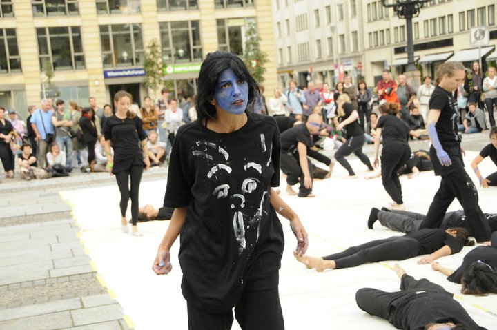

|
|
پرفورمنس "کات! به زندان بروید" در حمایت از هنرمندان در بند
يكشنبه9 مرداد 1390
تغییر برای برابری / سپهر عاطفی: آکسیون هنری با اجرای پرفورمنس "کات به زندان بروید" روز پنج شنبه، در برلین -ژاندارمرمارکت- با حضور هنرمندان ایرانی و غیرایرانی مقیم برلین و در همبستگی با هنرمندان ایرانی -پگاه آهنگرانی، رامین پرچمی، مهناز محمدی، مرضیه وفامهر، جعفر پناهی و...- تحت فشار در ایران برگزار شد.
در ابتدای برنامه مارکوس لونینگ، نمایندهی دولت آلمان برای رسیدگی به حقوق بشر وزارت امور خارجه با ابراز تاسف از وضعیت حقوق بشر در ایران برگزاری چنین آکسیونهایی را ضروری دانست و افزود چنانچه فشار از خارج از کشور حتی باعث آزادی یک زن و مرد شود تاثیر خود را گذاشته است.

در ادامهی برنامه محمدرضا مرتضوی نوازندهی سرشناس دف و تمبک به اجرای برنامه پرداخت و همزمان کاوه قائمی و نگار آزادمهر به همراه گروه هنرمند خود به اجرای رقص پرداختند.
کانی علوی نقاش ایرانی برجسته ساکن برلین و مبتکر گالری بخش شرقی برلین نیز نقشی از فریاد را بر روی لباس رقصندهها و صحنهی رقص تصویر کرد
این برنامه از طرف گروهی از هنرمندان و خبرنگاران مقیم برلین ترتیب داده شده بود